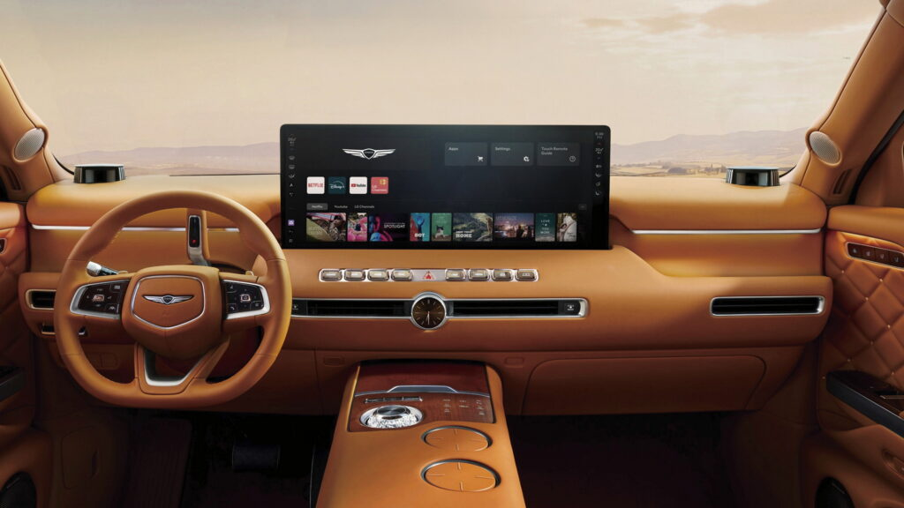

for DC Advanced UX Team.Vivi · Yohan · Libby · Lim Jisu · Katey · Anna
Back Issue

Cockpit
Genesis GV90: the OLED rises 90 mm when parked
Genesis has detailed the GV90's cabin screen: a 23.6-inch wide OLED (584 × 219 mm, 3840 × 1440) that lifts 90 mm on a brushless motor and rack-and-pinion when parked, exposing a 24.6-inch panel and about 70 percent more viewing area, then retracts as soon as the car moves. It runs under 40 dB and was cycled 100,000 times. Around it: a 25-inch HUD, Pleos Connect with separate driver and passenger menu bars, physical shortcut keys and front seats that turn 180 degrees. A motorised screen as a parked-mode feature, not a party trick.
제네시스가 GV90 실내 스크린의 세부를 공개했다. 23.6인치 와이드 OLED(584×219mm, 3840×1440)가 주차 시 브러시리스 모터와 랙앤피니언으로 90mm 솟아 24.6인치 패널을 드러내며 시야 면적이 약 70% 늘고, 차가 움직이면 곧바로 내려간다. 소음은 40dB 이하, 내구 시험은 10만 회다. 주변에는 25인치 HUD, 운전석과 조수석 메뉴 바를 분리한 플레오스 커넥트, 물리 단축 버튼, 180도 회전하는 앞좌석이 있다. 승강 스크린을 주차 모드의 기능으로 설계한 사례다.
BYD's off-road brand Fang Cheng Bao has shown the cabin of the Ti 9, its 5,270 mm flagship SUV, ahead of its China launch: a 30-inch floating centre screen over an LCD cluster and a HUD, a column shifter behind the wheel, and a centre tunnel that keeps a block of physical controls beside the wireless charger and two cup holders. The show car is white with gold accents, suede on pillars and headliner, minimal door cards and an armrest fridge for row two. Three seating layouts; plug-in hybrid with 400 kW combined and 310 km EV range.
BYD의 오프로드 브랜드 팡청바오가 중국 출시를 앞두고 전장 5,270mm 플래그십 SUV Ti 9의 실내를 공개했다. 30인치 플로팅 센터 스크린 아래 LCD 계기판과 HUD를 두고, 변속 레버는 스티어링 휠 뒤 컬럼식으로 옮겼으며, 센터 터널에는 무선 충전 패드와 컵홀더 옆에 물리 조작 블록을 남겼다. 전시차는 흰색 실내에 금색 포인트, 필러와 천장은 스웨이드, 2열용 냉장고가 암레스트에 있다. 시트 배치는 세 가지, 플러그인 하이브리드 합산 400kW, 전기 주행 310km다.
For Wizards of the Coast's Reality Fracture set (out 2 October), Paris studio Unit Motion Design built the trailer as four stained-glass frescos: Jace Beleren's past, evolution, rise and final confrontation, each redrawn from existing card art inside the constraints of lead lines. A Houdini procedural system generates and manages the glass pieces; custom shaders give the panes depth and back-lit colour, and the camera moves through the murals as if they were sets. Voice by Nolan North. A reference for turning a flat graphic language into a lit, dimensional one.
위저즈 오브 더 코스트의 10월 2일 발매 세트 '리얼리티 프랙처'를 위해 파리 스튜디오 유닛 모션 디자인이 예고편을 네 장의 스테인드글라스 벽화로 구성했다. 제이스의 과거, 변화, 부상, 최후의 대결을 기존 카드 아트에서 납선의 제약 안으로 다시 그렸다. 후디니 프로시저럴 시스템이 유리 조각을 생성해 관리하고, 전용 셰이더가 유리의 두께와 역광 색을 만들며, 카메라는 세트처럼 벽화 사이를 통과한다. 목소리는 놀런 노스다. 평면 그래픽 언어를 빛과 부피가 있는 화면으로 바꾼 참고 사례다.
At Connect 2026 Meta showed Muse Charm, a keychain-sized puck built only to carry its Muse agent: a 2-inch touchscreen filled edge to edge by a customisable cartoon character, a fingerprint sensor in one corner that starts a voice conversation without unlocking a phone, a 5G modem so it works alone, and a small camera. Muse is the assistant Meta launched this month to do admin such as emails and bookings. The hardware comes from the studio led by former Apple design chief Alan Dye; shipping by December, price not set. An agent given a face, a body and a single button.
메타가 커넥트 2026에서 뮤즈 에이전트만을 위해 만든 열쇠고리 크기의 기기 뮤즈 참을 공개했다. 2인치 터치스크린을 맞춤형 만화 캐릭터가 가득 채우고, 모서리의 지문 센서를 누르면 휴대전화를 잠금 해제하지 않고도 음성 대화가 시작된다. 5G 모뎀으로 단독 통신하며 작은 카메라도 있다. 뮤즈는 메타가 이달 선보인 비서로 이메일과 예약 같은 잡무를 대신한다. 하드웨어는 전 애플 디자인 책임자 앨런 다이의 스튜디오가 설계했고 12월까지 출하하며 가격은 미정이다. 에이전트에 얼굴과 몸, 버튼 하나를 준 셈이다.
The refreshed Mazda CX-6e, built with Changan for China, drops Mazda's screen-light, button-heavy cabin: a 26.45-inch 5K display runs from the centre to the passenger side with minimal switchgear, a 50-inch head-up display is standard and a 100-inch unit optional. A roof LiDAR, three radars, 11 cameras and 12 ultrasonics feed an 'advanced L2' system covering 200-plus scenarios, from highway lane changes to urban roundabouts and U-turns. LiDAR trims start at 145,900 yuan (about $21,700), in EV and EREV forms. The brand that argued for dials has gone full glass in China.
창안과 함께 중국에서 만드는 마쓰다 CX-6e 부분변경 모델이 마쓰다 특유의 '스크린은 작게, 버튼은 많이' 실내를 버렸다. 26.45인치 5K 디스플레이가 센터에서 조수석까지 이어지고 물리 스위치는 최소화됐으며, 50인치 HUD가 기본, 100인치가 옵션이다. 루프 라이다와 레이더 3개, 카메라 11개, 초음파 센서 12개가 고속도로 차선 변경부터 도심 회전교차로와 유턴까지 200여 개 상황을 다루는 '고급 L2'를 받친다. 라이다 트림은 145,900위안(약 21,700달러)부터로 EV와 EREV로 나온다. 다이얼을 옹호하던 브랜드가 중국에서는 전면 유리로 갔다.
Leone Happiness Factory: wrappers at building scale
Design Bridge and Partners has turned Turin sweet maker Leone's live production line into the Happiness Factory, a 2,000 m² visitor experience in 14 themed zones. The facade runs from terracotta roof tiles into candy-striped cladding, gold script is applied like icing, and the strawberries, hazelnuts and violets of the 2022 wrapper system are blown up to architectural scale with hand-painted signwriting. Navigation avoids screens: embossed sweet moulds with peep-holes, an apothecary room of labelled essence drawers, archive products in acrylic. A packaging system taken off the shelf and walked through.
Design Bridge and Partners把都灵糖果老牌Leone的现役生产线改造成2000平方米、14个主题区的“幸福工厂”。外立面从陶土屋瓦过渡到糖果条纹外墙，金色手写体像糖霜一样涂在墙上；2022年包装系统里的草莓、榛子和紫罗兰被放大到建筑尺度，配以手绘招牌字。动线不靠屏幕：带窥孔的压花糖模、贴标抽屉组成的香精药房、亚克力柜中的档案产品。一套包装设计从货架走进了空间。
디자인 브리지 앤 파트너스가 토리노의 사탕 회사 레오네의 실제 생산 라인을 14개 주제 구역, 2,000㎡의 체험 공간 '해피니스 팩토리'로 바꿨다. 외관은 테라코타 기와에서 사탕 줄무늬 외장으로 이어지고 금색 필기체는 아이싱처럼 얹혔으며, 2022년 포장 시스템의 딸기, 헤이즐넛, 제비꽃이 건축 규모로 확대되어 손으로 그린 간판 글씨와 함께 놓였다. 안내는 화면 대신 구멍 뚫린 엠보싱 사탕 틀, 라벨 붙은 향료 서랍의 약방, 아크릴 속 아카이브 제품으로 이뤄진다. 포장 시스템이 선반을 떠나 공간이 됐다.
Concept director Volodymyr Donchenko has spent years building Gridscape, a hovercraft flight experience in Unreal Engine 5 inspired by The Matrix Awakens: a dense, fog-bound abandoned city of millions of instanced assets, rendered with Nanite, Lumen and MegaLights, Ultra Dynamic Sky and EasyFog, then graded with LUTs. Assets came from 3ds Max and Corona archives and from Blender with Zen Sets and NOVA procedural texturing; scattering is Blueprint-driven and the map uses World Partition. He wrote the orchestral score himself and built a cooling rig so the RTX 4090 laptop survived. A one-person answer to Epic's demo.
컨셉 디렉터 볼로디미르 돈첸코가 수년에 걸쳐 언리얼 엔진 5로 '매트릭스 어웨이큰스'에서 영감을 받은 호버크래프트 비행 체험 '그리드스케이프'를 만들었다. 안개에 잠긴 버려진 도시는 수백만 개의 인스턴스 에셋으로 이뤄지고 나나이트와 루멘, 메가라이츠, 울트라 다이내믹 스카이, 이지포그로 렌더링한 뒤 LUT로 색을 입혔다. 에셋은 3ds 맥스와 코로나 아카이브, 젠 세츠와 NOVA를 쓴 블렌더에서 왔고 배치는 블루프린트, 맵은 월드 파티션을 쓴다. 음악도 직접 썼고 RTX 4090 노트북용 냉각 장치를 손수 만들었다. 에픽의 기술 데모에 대한 1인 답변이다.
BYD Seagull II cabin: no cluster, a column shifter
After last week's design sketches, CarNewsChina has the second-generation BYD Seagull's cabin: the driver's cluster is gone, driving data moves to a raised floating centre screen, the gear selector moves to a column stalk and a two-spoke wheel arrives. A row of physical buttons sits under the central vents, a raised bridge holds two cup holders and a wireless pad with open storage beneath, and the wing-shaped door pulls become conventional handles. The car grows to 4,205 mm on a 2,650 mm wheelbase and seats five; rear-wheel drive and a frunk are new. A Tesla-style layout in BYD's cheapest car.
지난주 디자인 스케치에 이어 카뉴스차이나가 2세대 BYD 시걸의 실내를 확보했다. 운전석 계기판이 사라지고 주행 정보는 높게 띄운 플로팅 센터 스크린으로 옮겨가며, 변속 레버는 컬럼 스토크로, 스티어링 휠은 2스포크로 바뀐다. 중앙 송풍구 아래 물리 버튼이 한 줄 남고, 높인 브리지에는 컵홀더 두 개와 무선 충전 패드, 그 아래 개방형 수납이 있으며 날개 모양 도어 손잡이는 일반 손잡이가 됐다. 차체는 휠베이스 2,650mm에 전장 4,205mm로 커져 5인승이 됐고 후륜구동과 프렁크가 새로 더해졌다. 테슬라식 배치가 BYD의 가장 싼 차에 들어온다.
Li Tianyuan (Sawyer Li), Xiaomi Auto's head of design and formerly the first Chinese designer at BMW's Munich headquarters, walks CarNewsChina through the Skynomad family: the N70 SUV, the N90 crossover at 0.255 Cd, and the N90 Max with its electric pop-up roof cabin. He argues for eye-like twin headlamps over a single-bar 'robot face', for calm surfaces refined through bonnet angle, windscreen transitions and rear geometry, and for front seats that rotate into a lounge layout. His line on HMI: technology need not always be visible; it steps back and appears when needed.
BMW 뮌헨 본사에 들어간 첫 중국인 디자이너였던 샤오미 오토 디자인 총괄 리톈위안(소여 리)이 카뉴스차이나에 스카이노마드 제품군을 설명했다. N70 SUV, 공기저항계수 0.255의 N90 크로스오버, 전동 팝업 루프 캐빈을 갖춘 N90 맥스다. 그는 한 줄 램프의 '로봇 얼굴' 대신 두 눈 같은 헤드램프를, 보닛 각도와 윈드실드 전환부, 후면 형상을 다듬어 얻는 차분한 면을, 라운지 배치로 회전하는 앞좌석을 내세운다. HMI에 대한 그의 말은 이렇다. 기술은 늘 보일 필요가 없고, 뒤로 물러나 있다가 필요할 때 나타난다.
Car Design News drives the e-208 GTI, the 281 bhp electric hot hatch that revives the 205 GTI's cues: red carpets, red striping on seats, wheel and instrument panel, and split seats in charcoal faux leather with black-and-red houndstooth fabric. The gear selector sits in its own metal-shrouded divot; the touchscreen gets clear anchor points, though the pedals sit close. Outside, the car is 30 mm lower with a 56 mm wider front track, red lines frame the arches and the claw tail lamps are framed in gloss black. From £35,000. Heritage handled through materials, not screens.
Car Design News试驾了e-208 GTI——281马力的纯电小钢炮复刻了205 GTI的符号：红色地毯，座椅、方向盘和仪表台上的红色条纹，炭灰仿皮拼黑红千鸟格的分体座椅。换挡拨杆坐在带金属罩的独立凹槽里，中控触摸屏有清晰的锚点，只是踏板略挤。车外，车身降低30毫米，前轮距加宽56毫米，红线勾勒轮拱，爪痕尾灯以亮黑框住。售价35,000英镑起。传承靠材质而非屏幕来表达。
카 디자인 뉴스가 205 GTI의 단서를 되살린 281마력 전기 핫해치 e-208 GTI를 시승했다. 붉은 카펫, 시트와 휠, 계기판의 붉은 줄무늬, 차콜 인조가죽에 검정과 빨강 하운드투스 직물을 짝지은 분할 시트가 그것이다. 변속 셀렉터는 금속 덮개를 두른 독립 홈에 앉고, 터치스크린은 명확한 기준점을 갖췄지만 페달 간격은 좁다. 외관은 차고가 30mm 낮아지고 앞 트레드가 56mm 넓어졌으며, 붉은 선이 휠아치를 두르고 발톱 테일램프는 유광 검정 틀로 감쌌다. 35,000파운드부터다. 유산을 화면이 아니라 소재로 다뤘다.
Alex Dufetel of Sacreblue Studio built a smart-home light controller with four motorised faders in a solid walnut body: pick a room with the rotary knob and the faders glide to where that room's lights currently sit; dim from the phone and the physical sliders follow, so the hardware never lies about state. Four buttons hold presets that change meaning with the active room. Knob and fader caps are CNC-machined aluminium. Motorised faders, borrowed from mixing desks, are the cleanest answer yet to the shared-control problem every cockpit with a screen and a knob has.
사크르블루 스튜디오의 알렉스 뒤페텔이 통호두나무 몸체에 모터 페이더 네 개를 넣은 스마트홈 조명 컨트롤러를 만들었다. 로터리 노브로 방을 고르면 페이더가 그 방 조명의 현재 값으로 스스로 미끄러지고, 휴대전화로 밝기를 낮추면 물리 슬라이더가 따라 움직여 하드웨어가 상태를 속이지 않는다. 버튼 네 개는 선택된 방에 따라 의미가 바뀌는 프리셋을 담는다. 노브와 페이더 캡은 CNC 가공 알루미늄이다. 믹싱 콘솔에서 가져온 모터 페이더는 화면과 노브가 제어를 나눠 갖는 모든 콕핏의 문제에 대한 가장 깔끔한 답이다.
The Periodic Fable: 49 beauty buzzwords as elements
Uncommon's D&AD Black Pencil winner for The Ordinary is a periodic table of nothing: 49 beauty-marketing words such as 'elixir', 'age-defying' and 'flawless', each checked with scientists and found to have no scientific meaning, set in stark monochrome type as element tiles. Out-of-home ran single elements and the full table; the launch film by Olivia De Camps (Smuggler) shows hypnotised students chanting the words while ice-rolling, a nod to Apple's '1984'. Creative Boom's angle: the industry wrote slop before AI did. Results: 11.8× site traffic. A strict typographic system carrying a whole campaign.
Uncommon为The Ordinary做的“元素周期寓言”拿下D&AD黑铅笔：一张“什么都没有”的周期表，收录elixir、age-defying、flawless等49个美妆营销词，每一个都经科学家核查、确认没有科学含义，以冷峻的单色字体排成元素格。户外投放既有单个元素也有整张表；Olivia De Camps执导的发布片让被催眠的学生一边做冰滚一边念咒般背诵这些词，致敬苹果《1984》。成效：网站流量11.8倍。一套严格的排版系统撑起了整个战役。
언커먼이 디 오디너리를 위해 만든 '주기율 우화'가 D&AD 블랙 펜슬을 받았다. 'elixir', 'age-defying', 'flawless' 같은 뷰티 마케팅 단어 49개를 과학자와 검증해 과학적 의미가 없음을 확인한 뒤, 차가운 단색 서체의 원소 타일로 짠 '아무것도 없는' 주기율표다. 옥외 광고는 원소 하나짜리와 전체 표로 나갔고, 올리비아 드 캉이 연출한 론칭 필름은 최면에 걸린 학생들이 아이스 롤링을 하며 단어를 읊는 장면으로 애플 '1984'에 눈짓한다. 성과는 사이트 트래픽 11.8배다. 엄격한 타이포그래피 체계 하나로 캠페인 전체를 끌고 갔다.
Materials company colormass has released 177 scanned materials free for personal and commercial use at library.colormass.com: wood, glass, paint, ceramic, synthetic leather, denim, linen, cotton, viscose, and organics such as leaves and soil. Each is captured on the company's own SVBRDF rig, a moving table under high-CRI LEDs and an industrial camera, processed into eight PBR maps per material and delivered as TIFFs for any physically based renderer. For CMF work these are real fabrics and finishes, not painted approximations, and they drop straight into Unreal, Blender or Substance scenes.
소재 기업 컬러매스가 library.colormass.com에서 스캔한 소재 177종을 개인과 상업 용도 모두 무료로 풀었다. 목재, 유리, 도료, 세라믹, 합성피혁, 데님, 리넨, 면, 비스코스, 그리고 잎과 흙 같은 유기 소재다. 각 소재는 고연색 LED 아래 이동 테이블과 산업용 카메라로 이뤄진 자체 SVBRDF 장비로 촬영한 뒤 소재당 8장의 PBR 맵으로 가공해 TIFF로 제공되며 어떤 물리 기반 렌더러에도 쓸 수 있다. CMF 작업에서 이는 그려낸 근사치가 아니라 실제 직물과 마감이며 언리얼, 블렌더, 서브스턴스 장면에 바로 들어간다.
Motion Rivalry's REACH is a 3.5-inch sunlight-readable sports computer with an open-source connector on top that takes snap-on modules: a 24 GHz mmWave rear radar (5–30 m), a 1080p60 camera, a walkie-talkie with a 1–2 km range and a wind meter. On a bike it estimates cadence and power from motion alone, with no external sensors; a programmable RGB strip along the base shows the training zone, and rides export as FIT, GPX or CSV to Strava. The same head unit moves to rowing, kayaking and paragliding. $359 on Kickstarter against a $599 list. An accessory rail a scooter dash could learn from.
모션 라이벌리의 REACH는 햇빛 아래서도 읽히는 3.5인치 스포츠 컴퓨터로, 상단의 오픈소스 커넥터에 모듈을 끼운다. 24GHz 밀리미터파 후방 레이더(5~30m), 1080p60 카메라, 1~2km 무전기, 풍속계가 있다. 자전거에서는 외부 센서 없이 움직임만으로 케이던스와 파워를 추정하고, 바닥의 RGB 띠가 훈련 구간을 보여주며, 기록은 FIT, GPX, CSV로 스트라바에 보낸다. 같은 본체를 조정, 카약, 패러글라이딩에 옮겨 쓸 수 있다. 킥스타터 가격은 359달러, 정가는 599달러다. 스쿠터 계기판이 배울 만한 액세서리 레일 방식이다.
Alfa Romeo has put an America's Cup livery across Junior, Tonale, Giulia and Stelvio in Europe. Junior and Tonale come in grey with gloss-black accents and red stripes on 18- or 20-inch black diamond-cut three-spoke wheels; Giulia and Stelvio go blacked-out with carbon inside and out, or white or Etna Red. All four share black-and-grey 3D-knit fabric with red stripes carrying Luna Rossa lettering, red badges, aluminium pedals, ambient lighting and custom digital cockpit graphics. Quadrifoglio models are excluded. A CMF package that reaches the cluster theme, not just the paint.
알파 로메오가 아메리카스컵 요트팀 루나 로사의 색을 유럽 라인업 주니어, 토날레, 줄리아, 스텔비오에 입혔다. 주니어와 토날레는 회색에 유광 검정 장식과 붉은 줄무늬, 18인치 또는 20인치 검정 다이아몬드 컷 3스포크 휠을 쓰고, 줄리아와 스텔비오는 안팎에 카본을 두른 올블랙이거나 흰색, 에트나 레드로 나온다. 네 차종 모두 루나 로사 글자가 든 붉은 줄무늬의 검정·회색 3D 니트 직물, 붉은 엠블럼, 알루미늄 페달, 앰비언트 조명, 전용 디지털 계기판 그래픽을 공유한다. 콰드리폴리오는 제외된다. 도장을 넘어 계기판 테마까지 닿는 CMF 패키지다.
Ducati's 2027 Multistrada V4 Pikes Peak changes nothing mechanical and everything graphic: a red-and-white-over-black livery lifted from the MotoGP and World Superbike machines, Ducati Corse branding and a #1 racing-plate motif on the side panels. It is the sport-touring flagship dressed as a race bike, with further personalisation through the Ducati Factory Made programme. For a graphics team it is a clean case study in how a racing identity lands on a road bike's panel breaks: where the plate sits, how the stripe follows the tank seam, and what stays black.
두카티 2027년형 물티스트라다 V4 파이크스 피크는 기계적으로는 아무것도, 그래픽으로는 모든 것을 바꿨다. 모토GP와 월드 슈퍼바이크 머신에서 가져온 검정 바탕의 빨강·흰색 도장, 두카티 코르세 표기, 사이드 패널의 1번 레이싱 플레이트 모티프가 더해졌다. 스포츠 투어링 기함이 레이스 바이크 옷을 입은 셈이며 두카티 팩토리 메이드 프로그램으로 추가 개인화도 된다. 레이싱 아이덴티티가 공도용 바이크의 패널 분할선 위로 어떻게 옮겨지는지, 플레이트 위치와 탱크 이음선을 따르는 줄무늬, 검정으로 남는 부위를 보여주는 깔끔한 사례다.